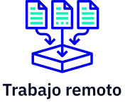
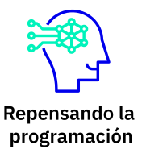
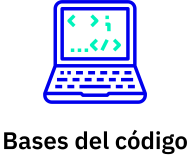
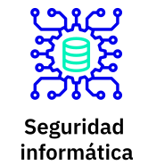

Hello world pale blue dot
un podcast que explora el mundo de la programación. Nuevos episodios, todo los jueves cada 15 días.
Episodios

De dónde
venimos
our posturings, our imagined self-
importance, the delusion that we
have some privileged position in
the universe, are challenged by
this point of pale light.
Our planet is a lonely speck in
the great enveloping cosmic dark.
In our obscurity, in all this
vastness, there is no hint that
help will come from elsewhere to
save us from ourselves.
Invitadas/os estelares


Algunos de nuestros temas
Trabajo remoto
Repensando la programación
Bases del código
Seguridad informática